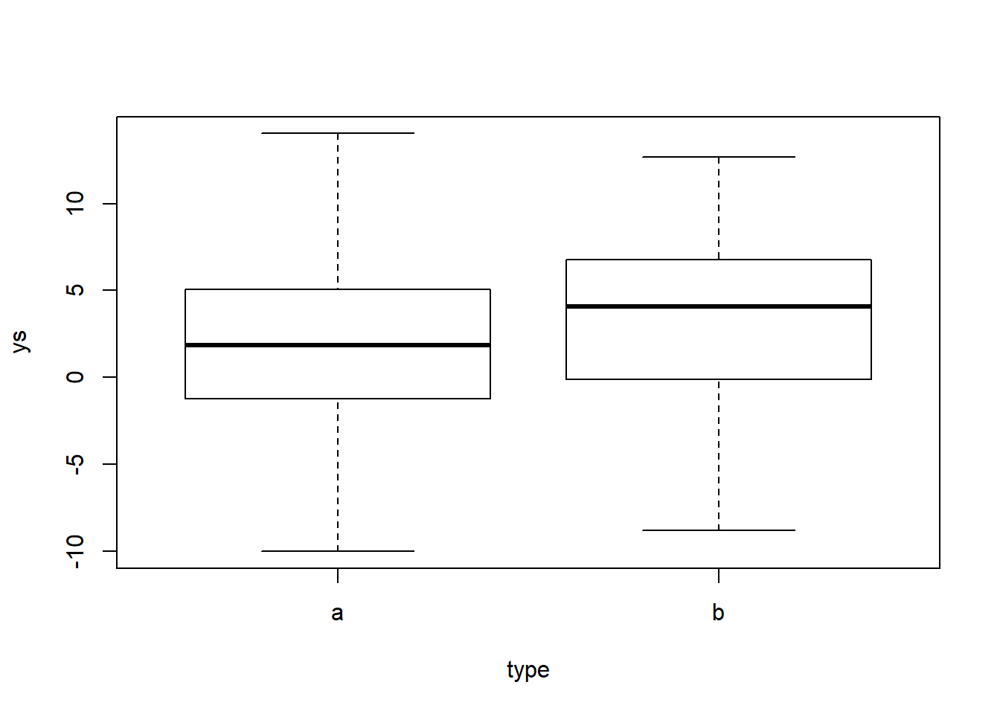
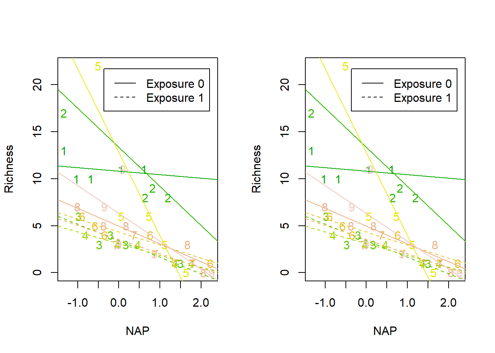
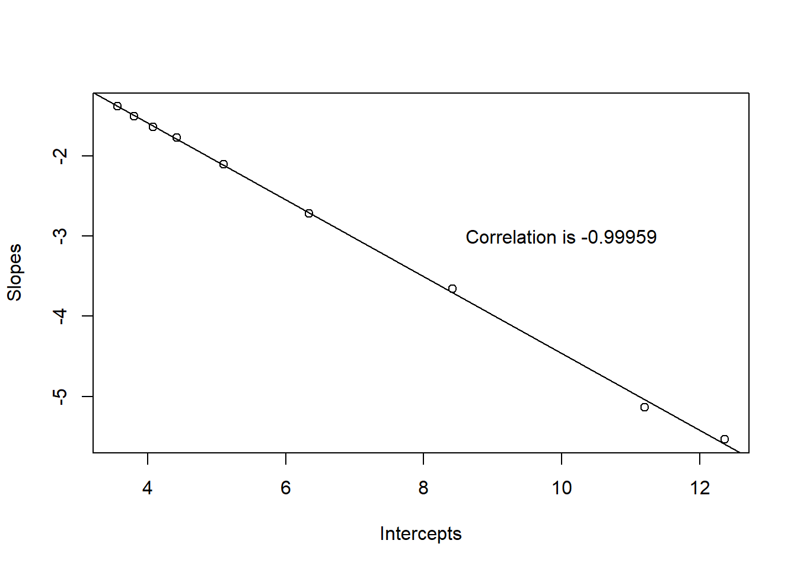
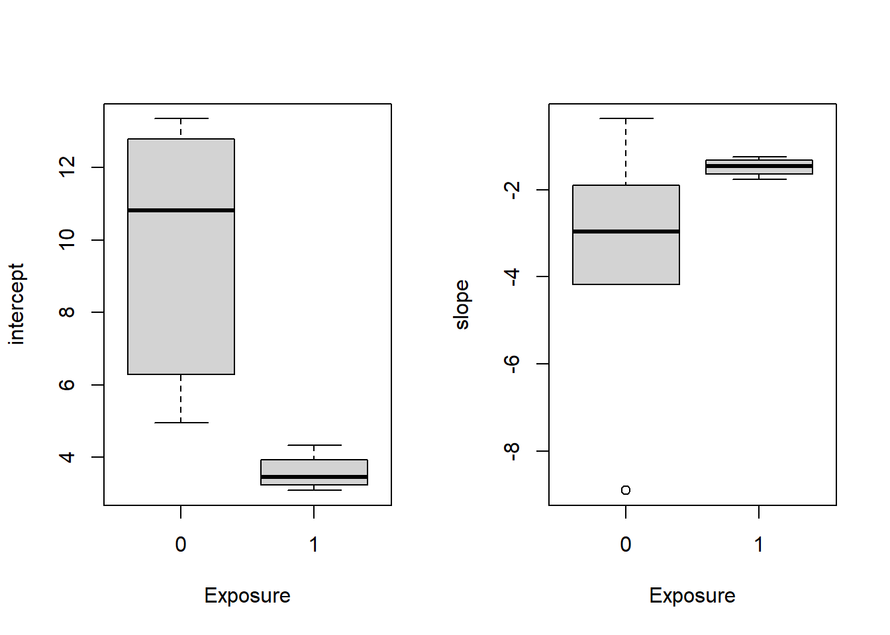
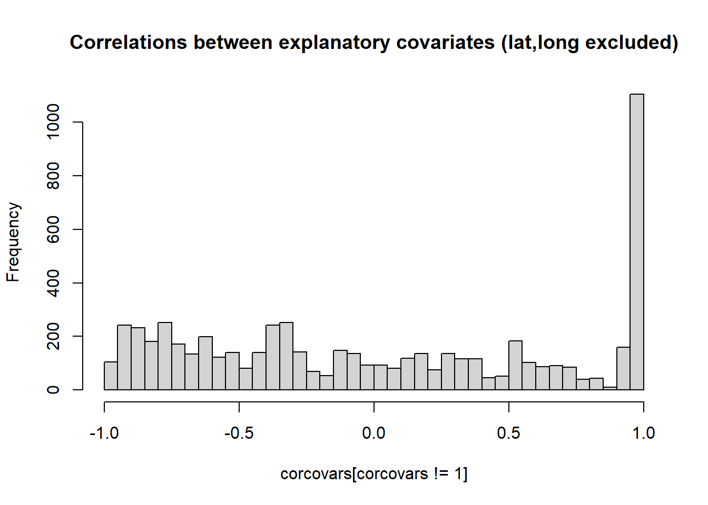
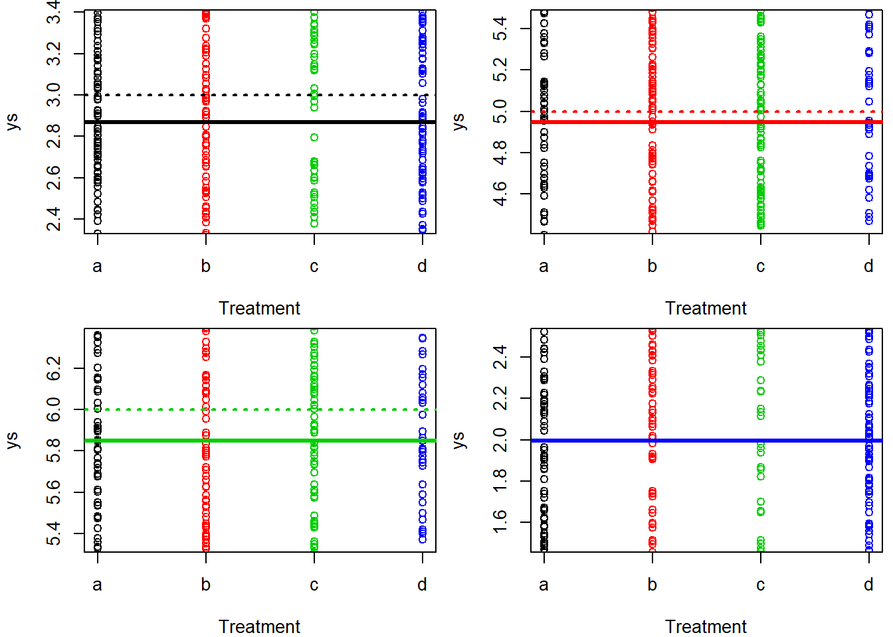

Chapter 20 Random effects and mixed models
In this chapter we investigate the use of random effects.
We describe the analysis of the RIKZ dataset, a traditional dataset used to illustrate mixed models, a companion to the book by Zuur et al. ().
We read in the data
RIKZ <- read.delim("extfiles/RIKZ.txt")
#recoding exposure so that 8 and 10 become 0's and 11's become 1
RIKZ$Exposure=ifelse(RIKZ$Exposure==11,1,0)we look at the data structure
## 'data.frame': 45 obs. of 5 variables:
## $ Sample : int 1 2 3 4 5 6 7 8 9 10 ...
## $ Richness: int 11 10 13 11 10 8 9 8 19 17 ...
## $ Exposure: num 0 0 0 0 0 0 0 0 0 0 ...
## $ NAP : num 0.045 -1.036 -1.336 0.616 -0.684 ...
## $ Beach : int 1 1 1 1 1 2 2 2 2 2 ...## Sample Richness Exposure NAP Beach
## 1 1 11 0 0.045 1
## 2 2 10 0 -1.036 1
## 3 3 13 0 -1.336 1
## 4 4 11 0 0.616 1
## 5 5 10 0 -0.684 1
## 6 6 8 0 1.190 2We can look at the response variable, species richness, as a function of NA

When we see it like this, there is no notion about the structure of the data, in particular that there are 5 measurements in each beach

but we could make it a bit more explicit by having different symbols for each beach (say the beach number) and coloring each beach symbol with a diferent color
## Warning in par(mfwor = c(1, 1)): "mfwor" is not a graphical parameterplot(Richness~NAP,pch=as.character(Beach),col= terrain.colors(10)[as.numeric(Beach)],data=RIKZ)
abline(lm(Richness~NAP,data=RIKZ),lwd=2,lty=2)
Now the two stage approach: (1) we consider the relation between R and NAP, for each beach, and (2) we model the estimated coefficients per beach as a function of exposure
plot(Richness~NAP,pch=as.character(Beach),col= terrain.colors(10)[as.numeric(Beach)],data=RIKZ)
as=numeric(9);bs=numeric(9);exp=numeric(9)
for(i in 1:9){
m=lm(Richness~NAP,data=RIKZ[RIKZ$Beach==i,])
cs=coef(m)
as[i]=cs[1]
bs[i]=cs[2]
exp[i]=RIKZ$Exposure[i*5]
abline(cs,lty=exp[i]+1,col=terrain.colors(10)[i])
}
legend("topright",lty=c(1,2),legend=c("Exposure 0","Exposure 1"),inset=0.05)
Now the second stage
par(mfrow=c(1,2))
boxplot(as~exp,ylab="intercept",xlab="Exposure")
boxplot(bs~exp,ylab="slope",xlab="Exposure")
The way to do all this in one go is to consider a mixed model, where exposure is a fixed effect, but beach is considered a random effect.
Implementing the mixed model, with just random intercepts
Using lme from nlme
library(nlme)
RIKZ$fbeach=as.factor(RIKZ$Beach)
lme1=lme(Richness~NAP,random=~1|fbeach,data=RIKZ)
summary(lme1)## Linear mixed-effects model fit by REML
## Data: RIKZ
## AIC BIC logLik
## 247.4802 254.525 -119.7401
##
## Random effects:
## Formula: ~1 | fbeach
## (Intercept) Residual
## StdDev: 2.944065 3.05977
##
## Fixed effects: Richness ~ NAP
## Value Std.Error DF t-value p-value
## (Intercept) 6.581893 1.0957618 35 6.006682 0
## NAP -2.568400 0.4947246 35 -5.191574 0
## Correlation:
## (Intr)
## NAP -0.157
##
## Standardized Within-Group Residuals:
## Min Q1 Med Q3 Max
## -1.4227495 -0.4848006 -0.1576462 0.2518966 3.9793918
##
## Number of Observations: 45
## Number of Groups: 9Using lmer from lme4
## Linear mixed model fit by REML ['lmerMod']
## Formula: Richness ~ NAP + (1 | fbeach)
## Data: RIKZ
##
## REML criterion at convergence: 239.5
##
## Scaled residuals:
## Min 1Q Median 3Q Max
## -1.4227 -0.4848 -0.1576 0.2519 3.9794
##
## Random effects:
## Groups Name Variance Std.Dev.
## fbeach (Intercept) 8.668 2.944
## Residual 9.362 3.060
## Number of obs: 45, groups: fbeach, 9
##
## Fixed effects:
## Estimate Std. Error t value
## (Intercept) 6.5819 1.0958 6.007
## NAP -2.5684 0.4947 -5.192
##
## Correlation of Fixed Effects:
## (Intr)
## NAP -0.157Make predictions from lme
Look at the fitted model predictions over the data (note the use of function ranef to extract the estimated random effects from the fitted model)
plot(Richness~NAP,pch=as.character(Beach),col= terrain.colors(10)[as.numeric(Beach)],data=RIKZ)
#the pooled line
intercept<-lme1$coefficients$fixed[1]
slope<-lme1$coefficients$fixed[2]
abline(intercept,slope,lwd=3)
#lines(NAPs,Level0[I],lwd=3)
for(j in 1:9){
abline(a=intercept+ranef(lme1)[j,1],b=slope,col=terrain.colors(10)[j])
}
Implementing the mixed model, with random intercepts and slopes
Using lme from nlme
## Linear mixed-effects model fit by REML
## Data: RIKZ
## AIC BIC logLik
## 244.3839 254.9511 -116.1919
##
## Random effects:
## Formula: ~NAP | fbeach
## Structure: General positive-definite, Log-Cholesky parametrization
## StdDev Corr
## (Intercept) 3.549051 (Intr)
## NAP 1.714968 -0.99
## Residual 2.702819
##
## Fixed effects: Richness ~ NAP
## Value Std.Error DF t-value p-value
## (Intercept) 6.588709 1.2647569 35 5.209467 0e+00
## NAP -2.830029 0.7229413 35 -3.914605 4e-04
## Correlation:
## (Intr)
## NAP -0.819
##
## Standardized Within-Group Residuals:
## Min Q1 Med Q3 Max
## -1.8213363 -0.3411033 -0.1674617 0.1921147 3.0396952
##
## Number of Observations: 45
## Number of Groups: 9Using lmer from lme4
## Linear mixed model fit by REML ['lmerMod']
## Formula: Richness ~ NAP + (NAP | fbeach)
## Data: RIKZ
##
## REML criterion at convergence: 232.4
##
## Scaled residuals:
## Min 1Q Median 3Q Max
## -1.8212 -0.3410 -0.1674 0.1925 3.0397
##
## Random effects:
## Groups Name Variance Std.Dev. Corr
## fbeach (Intercept) 12.600 3.550
## NAP 2.942 1.715 -0.99
## Residual 7.307 2.703
## Number of obs: 45, groups: fbeach, 9
##
## Fixed effects:
## Estimate Std. Error t value
## (Intercept) 6.5884 1.2649 5.208
## NAP -2.8301 0.7231 -3.914
##
## Correlation of Fixed Effects:
## (Intr)
## NAP -0.820
## optimizer (nloptwrap) convergence code: 0 (OK)
## Model failed to converge with max|grad| = 0.00267151 (tol = 0.002, component 1)Make predictions from lme
and ploting the model
plot(Richness~NAP,pch=as.character(Beach),col= terrain.colors(10)[as.numeric(Beach)],data=RIKZ)
#the pooled line
intercept<-lme3$coefficients$fixed[1]
slope<-lme3$coefficients$fixed[2]
abline(intercept,slope,lwd=3)
#lines(NAPs,Level0[I],lwd=3)
for(j in 1:9){
abline(a=intercept+ranef(lme3)[j,1],b=slope+ranef(lme3)[j,2],col=terrain.colors(10)[j])
}
Zuur says in page 110 we could compare the models by AIC, but that is just nonsense. Having been fitted by REML, no AIC is available
## [1] 247.4802## [1] 244.3839Just for comparison, we could try to see if a random effect model would be a better model. In other words, was NAP required at all or a different mean by beach would suffice?
We can look at the summary of such a model
## Linear mixed-effects model fit by REML
## Data: RIKZ
## AIC BIC logLik
## 267.1142 272.4668 -130.5571
##
## Random effects:
## Formula: ~1 | fbeach
## (Intercept) Residual
## StdDev: 3.237112 3.938415
##
## Fixed effects: Richness ~ 1
## Value Std.Error DF t-value p-value
## (Intercept) 5.688889 1.228419 36 4.631066 0
##
## Standardized Within-Group Residuals:
## Min Q1 Med Q3 Max
## -1.77968689 -0.50704111 -0.09795286 0.25468670 3.80631705
##
## Number of Observations: 45
## Number of Groups: 9Comparing the 3 models regarding AIC
## Warning in AIC.default(lme1, lme3, lme6): models are not all fitted to the same
## number of observations## df AIC
## lme1 4 247.4802
## lme3 6 244.3839
## lme6 3 267.1142we can see that the most parsimonious model is in fact the one with random intercepts and random slopes.
Just checking the correlation between the parameters in the random intercept and slope model, as they seem higly correlated.
Looking at the coefficients
## (Intercept) NAP
## 1 8.421059 -3.656259
## 2 12.363492 -5.536807
## 3 3.806646 -1.505714
## 4 3.562425 -1.385958
## 5 11.200160 -5.137363
## 6 4.426283 -1.775668
## 7 4.082949 -1.644330
## 8 5.099897 -2.106848
## 9 6.335472 -2.721318making a model
plot(coef(lme3)[,1],coef(lme3)[,2],xlab="Intercepts",ylab="Slopes")
abline(lm(coef(lme3)[,2]~coef(lme3)[,1]))
text(10,-3,paste("Correlation is",round(cor(coef(lme3)[,1],coef(lme3)[,2]),5)))
the correlation is in fact very large! Note this correlation is actually an output present in the lme and lmer fitted objects. A very detailed description of what these correlations are when we have more than 1 of them can be found here: https://rpubs.com/yjunechoe/correlationsLMEM. That is a quite advanced topic though.
Note that we could have considered a standard model where beach might be a factor and we would include an interaction between beach and NAP to allow for both different intercepts and slopes across beaches.
##
## Call:
## lm(formula = Richness ~ NAP + fbeach + NAP:fbeach, data = RIKZ)
##
## Residuals:
## Min 1Q Median 3Q Max
## -6.3022 -0.6614 -0.1076 0.4072 5.9090
##
## Coefficients:
## Estimate Std. Error t value Pr(>|t|)
## (Intercept) 10.8219 1.3341 8.112 1.03e-08 ***
## NAP -0.3718 1.5493 -0.240 0.812140
## fbeach2 2.5238 1.7685 1.427 0.165013
## fbeach3 -7.4212 1.7346 -4.278 0.000211 ***
## fbeach4 -7.7342 1.8541 -4.171 0.000281 ***
## fbeach5 1.9609 1.9485 1.006 0.323166
## fbeach6 -6.4973 1.7494 -3.714 0.000938 ***
## fbeach7 -7.3013 2.2611 -3.229 0.003253 **
## fbeach8 -5.8704 1.7981 -3.265 0.002974 **
## fbeach9 -4.5268 1.8631 -2.430 0.022036 *
## NAP:fbeach2 -3.8034 1.9941 -1.907 0.067169 .
## NAP:fbeach3 -1.3835 2.0405 -0.678 0.503511
## NAP:fbeach4 -0.8767 1.9528 -0.449 0.657044
## NAP:fbeach5 -8.5283 2.1340 -3.996 0.000447 ***
## NAP:fbeach6 -1.0167 1.8290 -0.556 0.582872
## NAP:fbeach7 -1.1458 2.2756 -0.504 0.618683
## NAP:fbeach8 -1.5212 1.8134 -0.839 0.408891
## NAP:fbeach9 -2.5957 1.9537 -1.329 0.195100
## ---
## Signif. codes: 0 '***' 0.001 '**' 0.01 '*' 0.05 '.' 0.1 ' ' 1
##
## Residual standard error: 2.479 on 27 degrees of freedom
## Multiple R-squared: 0.8494, Adjusted R-squared: 0.7546
## F-statistic: 8.957 on 17 and 27 DF, p-value: 4.056e-07We can represent the models fitted independently beach by beach we had above with this full model with the interaction term side by side:
par(mfrow=c(1,2))
plot(Richness~NAP,pch=as.character(Beach),col= terrain.colors(10)[as.numeric(Beach)],data=RIKZ)
as=numeric(9);bs=numeric(9);exp=numeric(9)
for(i in 1:9){
m=lm(Richness~NAP,data=RIKZ[RIKZ$Beach==i,])
cs=coef(m)
as[i]=cs[1]
bs[i]=cs[2]
exp[i]=RIKZ$Exposure[i*5]
abline(cs,lty=exp[i]+1,col=terrain.colors(10)[i])
}
legend("topright",lty=c(1,2),legend=c("Exposure 0","Exposure 1"),inset=0.05)
#a single model
plot(Richness~NAP,pch=as.character(Beach),col= terrain.colors(10)[as.numeric(Beach)],data=RIKZ)
#beach 1
abline(a=coef(lmALL)[1],b=coef(lmALL)[2],col= terrain.colors(10)[1],lty=exp[1]+1)
for(i in 2:9){
abline(a=coef(lmALL)[1]+coef(lmALL)[i+1],b=coef(lmALL)[2]+coef(lmALL)[i+9],col= terrain.colors(10)[i],lty=exp[i]+1)
legend("topright",lty=c(1,2),legend=c("Exposure 0","Exposure 1"),inset=0.05)
}
and we can add the AIC of this model to the above comparison
## Warning in AIC.default(lme1, lme3, lme6, lmALL): models are not all fitted to
## the same number of observations## df AIC
## lme1 4 247.4802
## lme3 6 244.3839
## lme6 3 267.1142
## lmALL 19 224.4232interestingly, the model without mixed effects is strongly favored as the most parsimonious model. This is perhaps not surprising given the clearly unrealistic model fits given the data for the model with both random intercepts and slopes for beach and NAP within beach. It seems as if the mixed model was not able to truly capture the range of slopes and intercepts required - I suspect this is due to the strong correlation between intercepts ans slopes note above. But then, pragmatically, what would you go about modelling this data?
This is not really the outcome I was looking for here, even if the decision to use beach as random effect or as a fixed effect is a philosophical one.